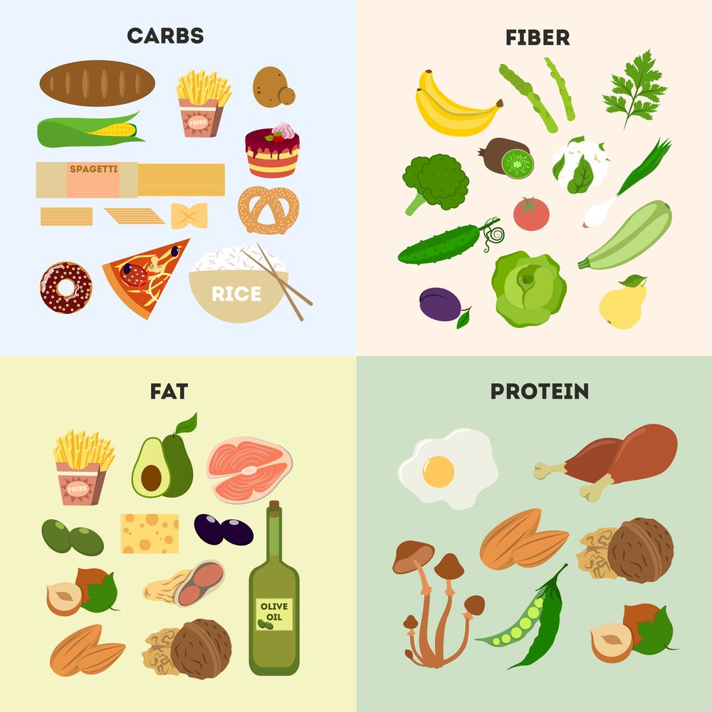

Nutrition is just as important as lifting!
Going hard in the gym is only part of the equation. Without proper nutrition, your body will not receive the fuel it needs to grow and build the muscle you have been working so hard to achieve.
Eating with your goals in mind
- -Getting Massive
- Eat in a caloric surplus- This will give your body more energy than it needs so that no gains are lost due to a lack of fuel.
- -Getting Shredded
- Eat in a caloric defecit- This will starve your energy of the energy it needs, requiring your body to pull energy from your fat storage. You won't build much muscle like this however, you will get extremely lean and have the six-pack you always wanted.
- -Getting Big and Shredded
- Eat calorically neutral- consume just enough energy to match your daily energy output. This will give your body just enough energy to grow, and any extra energy needed will come from your fat storage. You will maintain your bodyweight while your body recomposes, replacing the weight you gain in muscle with the weight you lose burning fat, getting you big and lean at the same time, like magic.
What should I be eating?
There are three main macronutrients and another vital nutrient group you should prioritize eating when trying to make gains.
- Protein- The main building blocks of muscle
- Carbohydrates- Pure energy your body will use immediately to fuel your activities
- Fats- Keeps your body running like a well-oiled machine and keeps your natural hormones stable
- Fiber- Another major building block for muscle growth as well as increasing your overall gut and hormonal health
